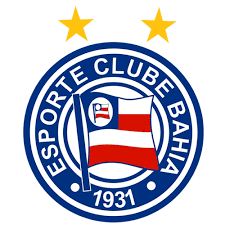
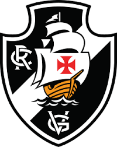
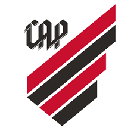

Sport Club Corinthians Paulista
Sport Club Corinthians Paulista, comumente referido como Corinthians, o São Paulo. Foi fundado como uma equipe de futebol no dia 1 de setembro e seu nome foi inspirado no Corinthian Football Club de Londres, que excursion
Frases relacionadas ao time
- O Time do Povo
- Todo Poderoso Timão
- Caiu em itaquera já era
Torcidas Organizadas
- Gaviões da Fiel
- Camisa 12
- Pavilhão 9
|
|
Adversário |
Local |
Data |
Horário |
 |
Bahia |
Itaquera |
16/08/2025 |
21:00 |
 |
Vasco |
Rio de Janeiro |
24/08/2025 |
16:00 |
 |
Atlético Paranaense |
Curitiba |
27/08/2025 |
21:30 |